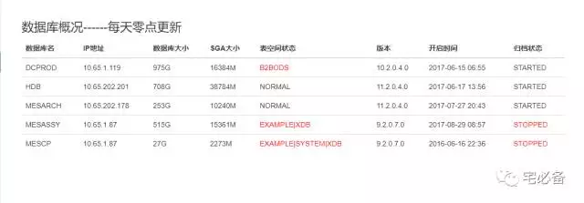

将Oracle监控指标在前端展现
这节讲述自定义命令相关的知识
这个专题主要内容有：
-
如何新建自定义命令
-
如何使用自定义命令获取Oracle自定义命令并写入数据库
-
如何将获取到的数据库监控指标在前端显示
经过前面的介绍我们已经把日常需要监控的指标存入了oraclestatus表中
下面我们将其在前端展现
开发环境
操作系统:CentOS 7.3
Python版本 :2.7
Django版本: 1.10.5
操作系统用户:oracle
建立页面的步骤
我们还是通过这张图的步骤来说明如何建立页面

urls.py页面
urlpatterns = [
url(r'^$', views.index, name='index'),
url(r'^oracle_command/$',views.oracle_command, name='oracle_command'),
url(r'^commandresult/$',views.commandresult, name='commandresult'),
url(r'^oracle_status$',views.oracle_status, name='oracle_status'),
]
oracle_status为展示Oracle监控指标的页面
views.py
def oracle_status(request):
result=oraclestatus.objects.all().order_by('tnsname')
dic ={'result':result}
return render_to_response('oracle_status.html',dic)
该函数将oraclestatus表中数据取出来之后传递给oracle_status.html文件
template文件
这里我们使用oracle_status.html文件来显示
{% block content %}
<div class="col-sm-9 col-sm-offset-3 col-md-10 col-md-offset-2 main" id='content'>
<p><h3>数据库概况------每天零点更新</h3></p>
<table class="table table-hover">
<thead>
<tr>
<th>数据库名</th>
<th>IP地址</th>
<th>数据库大小</th>
<th>SGA大小</th>
<th>表空间状态</th>
<th>版本</th>
<th>开启时间</th>
<th>归档状态</th>
</tr>
</thead>
<tbody>
{% for i in result %}
<tr>
<td>{{i.tnsname|upper}}</td>
<td>{{i.ipaddress|upper}}</td>
<td>{{i.dbsize|upper}}G</td>
<td>{{i.sga_size|upper}}M</td>
<td>{% if i.tbstatus != "normal" %} <div style="color:#F00">{% endif %}{{i.tbstatus|upper}}</td>
<td>{{i.version|upper}}</td>
<td>{{i.startup_time|upper}}</td>
<td>{% if i.archiver != "STARTED" %} <div style="color:#F00">{% endif %}{{i.archiver}}</td>
</tr>
{% endfor %}
</tbody>
</div>
{% endblock %}
这里通过一个表格来展现数据库指标的整体情况
Django允许在html文件内部使用程序动态控制页面的显示，代码中用到了if判断功能
对于表空间使用率不正常的以及未开启归档的以红色显示
注意：这里base.html,index.html文件都需要修改，具体见源码
最终效果
http://10.65.202.218:8081/monitor/oracle_status

可以看到已经显示出了有异常的表空间和归档状态的数据库
源代码位置
欢迎访问我的github主页查看源码
https://github.com/bsbforever/wechat_monitor
日常的监控指标展现在前端页面已经讲完了，这可以更方便我们日常的运维